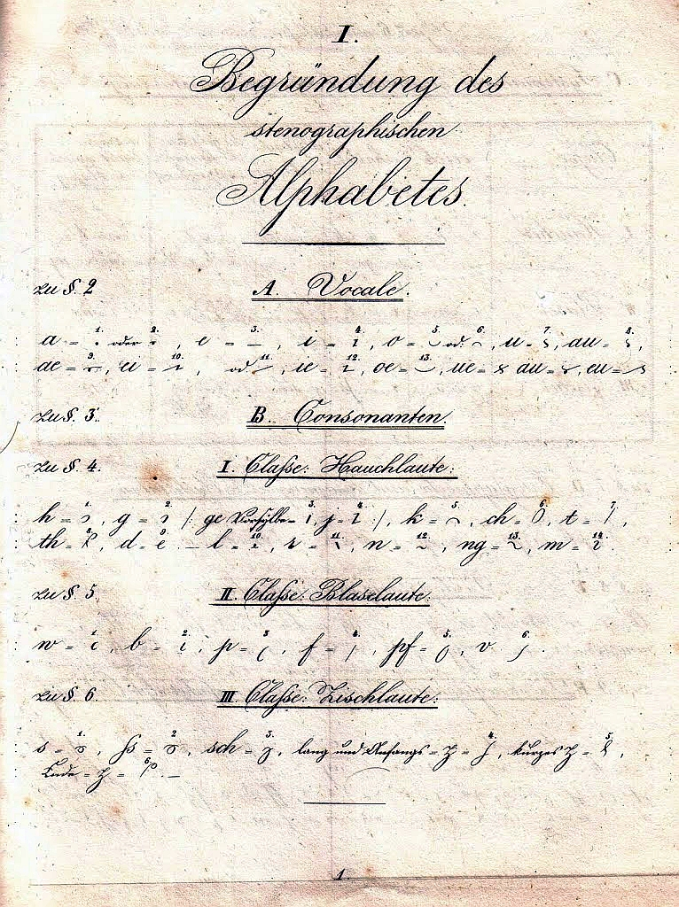
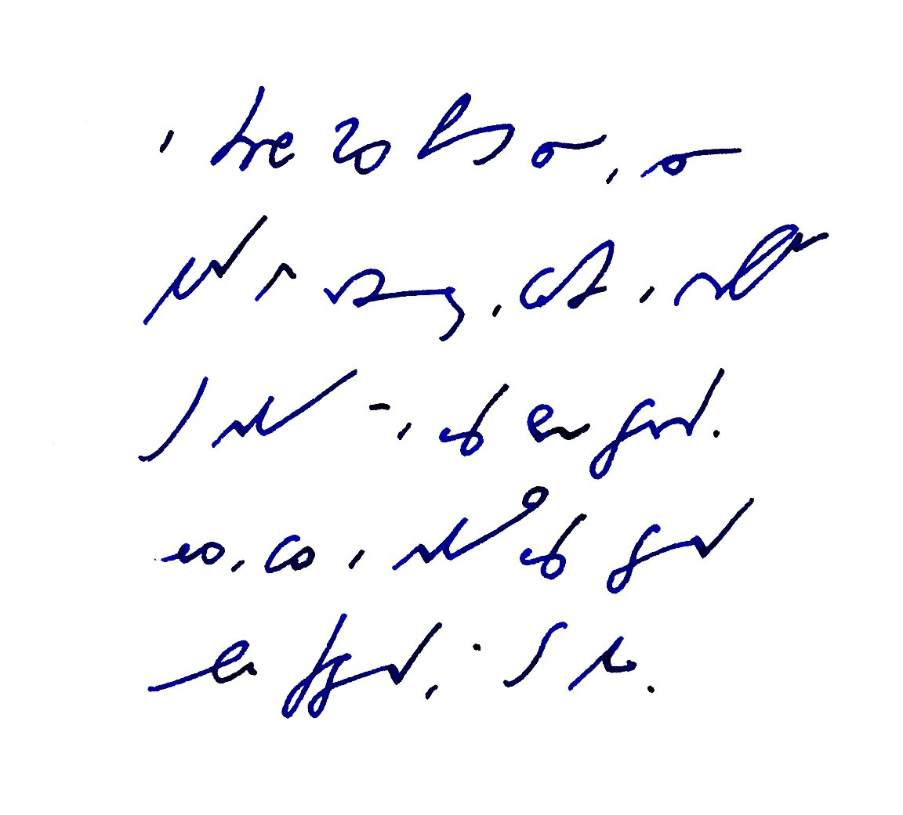
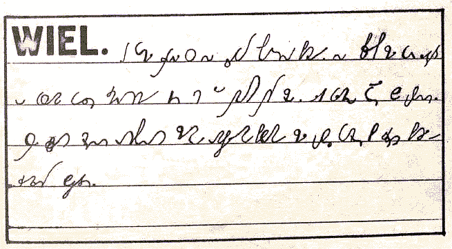

International
InternationalKonkurs na system stenografii cz. X (czyli podsumowanie)
2011-02-09 | autor: flamenco108Kilka słów na koniec prezentacji prac konkursowych sprzed lat bez mała czterdziestu…
Najpierw dygresja: Gabelsberger opublikował swój Anleitung zur deutschen Redezeichenkunst oder Stenographie w roku 1834. Poliński pierwszą wersję swojego systemu, będącego adaptacją reguł i wielu gotowych elementów systemu Gabelsbergera - w roku 1861. A zatem raptem 27 lat później. Biorąc poprawkę na ówczesne tempo rozchodzenia się informacji, można przyjąć, że polski system opóźnił się o dekadę względem pierwowzoru. Tymczasem ja prezentuję Państwu materiały odległe od nas o bez mała dwa pokolenia. Czy nie zmieniło się więcej w naszym życiu, technologii, metodach obróbki informacji, podejściu do tegoż? Z pewnością. Minęły całe epoki. Koniec tej dygresji.

Można było zauważyć, że prezentowane systemy rzeczywiście przedstawiały bardzo różny poziom, niektóre były wręcz śmieszne. Zastanawiające. Drugie spostrzeżenie, to fakt, że autorzy niezbyt daleko odbiegali od swoich pierwowzorów, których wpływ był wyraźnie widoczny. Złożyłbym to na karb faktu, iż byli to praktyczni stenografowie, dobrze wyuczeni swoich systemów, a zatem przekonani o ich wyższości, skoro sprawdzonej w praktyce. W rzeczywistości prezentowali tylko swoje własne “ulepszenia”, które zapewne już od jakiegoś czasu stosowali na własny użytek, bo tak im było łatwiej, prościej, bo ja wiem?
Poza systemami Ryszarda Trepnaua (Kopernik, Znak), czy też Andrzeja Kruszyńskiego (Citerion), nie było tam dokonań innych zainteresowanych teorią i naukowym podejściem do stenografii. Prace pozostałych to prace praktyków.

Przeważały systemy, w których nie usunięto cieniowania, jeżeli cieniowanie występowało w pierwowzorze, ani pozycyjności, takoż.
W większości propozycji nie znać było poszukiwania jednolitego obrazu znaków oddającego powiązania pomiędzy nimi, a zatem podobieństwo dźwięcznych do bezdźwięcznych, miękkich do twardych, szczelinowych do wybuchowych itp., co przecież znacznie ułatwiłoby naukę tak wielu znaków. Jednocześnie większość propozycji miała wiele znaków mało zróżnicowanych, wymagających chirurgicznej precyzji podczas pisania.
 TRANSKRYPCJA ([system Wieliczka]../2010-12-20_konkurs-na-system-stenografii-cz-1-wieliczka-cz-1/)): Wielki portal wspierał się na słupach z czerwonej cegły. Naszczycie stała para lwów o psim pysku, z terakoty, jak to było w modzie w tych stronach. Aleja platanów prowadziła do budynku. W środku dużego trawnika otoczonego starymi, omszałymi cedrami stała budowla piętrowa, cała z różowych cegieł i rzymskich dachówek.
Choć jury konkursowe wypowiedziało się dość surowo o większości prac, muszę się zgodzić z ich werdyktem - te projekty nie miały szansy zastąpić już istniejących, których główną i niezbywalną przewagą były używalność i popularność.
Ot, tyle.
2011-02-09 autor: flamenco108